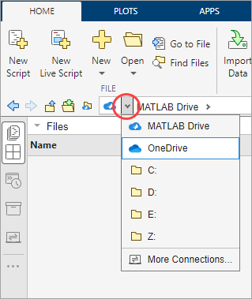

Use MATLAB to Access Files in Your Microsoft OneDrive
You can connect to your Microsoft® OneDrive™ account and access its contents directly from MATLAB®. On Windows® systems, if you have OneDrive set up on your system, MATLAB uses the OneDrive sync app to automatically connect to your OneDrive account. MATLAB does not automatically connect to your OneDrive account on macOS or Linux®. In MATLAB Online™, you must add a connection to your Microsoft OneDrive account before accessing your files.
Once you are connected to your OneDrive account, you can view and edit your stored files and save new files to your
OneDrive account from MATLAB. To view the files and folders in your OneDrive account, in the Current Folder toolbar, click the drop-down arrow to the left of
the current folder path and select your OneDrive connection. Your OneDrive
My files folder becomes the current folder in MATLAB and the Files panel displays the list of files and folders stored in that
folder. To open the Files panel if it is not visible, click the Files icon
 on the sidebar.
on the sidebar.

Alternatively, you can view and edit your OneDrive files by clicking the Open more panels button  on a sidebar and selecting
Connections to open the Connections panel. Then, in the My
Connections section of the Connections panel, right-click your OneDrive connection and select Navigate to OneDrive.
on a sidebar and selecting
Connections to open the Connections panel. Then, in the My
Connections section of the Connections panel, right-click your OneDrive connection and select Navigate to OneDrive.
Note
Large files (> 1 GB) can take several seconds to open in MATLAB.
Add Connection to OneDrive Account in MATLAB Online
To access your OneDrive files in MATLAB Online, add a connection to your OneDrive account:
On the sidebar in the MATLAB Online desktop, click the Open more panels button
 and select
Connections to open the Connections panel.
and select
Connections to open the Connections panel.In the Available Connections section, click the Add button next to OneDrive.
Sign in using your Microsoft account credentials.
If prompted, grant permission for MATLAB to access the files in your OneDrive account on your behalf.
Under certain circumstances, an administrator might need to grant permission to connect to your OneDrive account in MATLAB.
You can have only one OneDrive account connected at any given time. To use different accounts, remove the existing OneDrive connection and then add a OneDrive connection using the new account.
MATLAB Online does not show shared OneDrive folders or shortcuts to files and folders stored in Sharepoint®.

Remove Connection to OneDrive Account in MATLAB Online
To remove the connection to your OneDrive account from MATLAB Online, in the My Connections section of the Connections panel, right-click OneDrive and select Remove.
When you disconnect your OneDrive account, you can no longer access your OneDrive files from MATLAB Online. Additionally, you might need to manually revoke the permissions that you previously granted through MATLAB. To manually revoke the permissions, use one of these methods:
OneDrive — Go to
https://account.live.com/consent/Manage. Under the MATLAB app, click the Edit link. Then, click the Remove these permissions button.OneDrive for work or school — Go to
https://myapps.microsoft.com. On the MATLAB app block, click the More button and selectManage your application. Then, click the Revoke consent button.
Granting MATLAB Permission to Your OneDrive Account
When you connect to OneDrive from MATLAB, you are granting MATLAB permission to access the files in your OneDrive account on your behalf. The permissions MATLAB requests are delegated permissions, which allow MATLAB to act on behalf of the user currently signed in to MATLAB. For more information about the requested delegated permissions, see
https://learn.microsoft.com/graph/permissions-reference#files-permissions.
Note
Security Considerations: You can choose to restrict
user consent for the OneDrive accounts in your organization. To learn more about managing consent to
applications and evaluating consent requests, see https://learn.microsoft.com/azure/active-directory/manage-apps/manage-consent-requests.